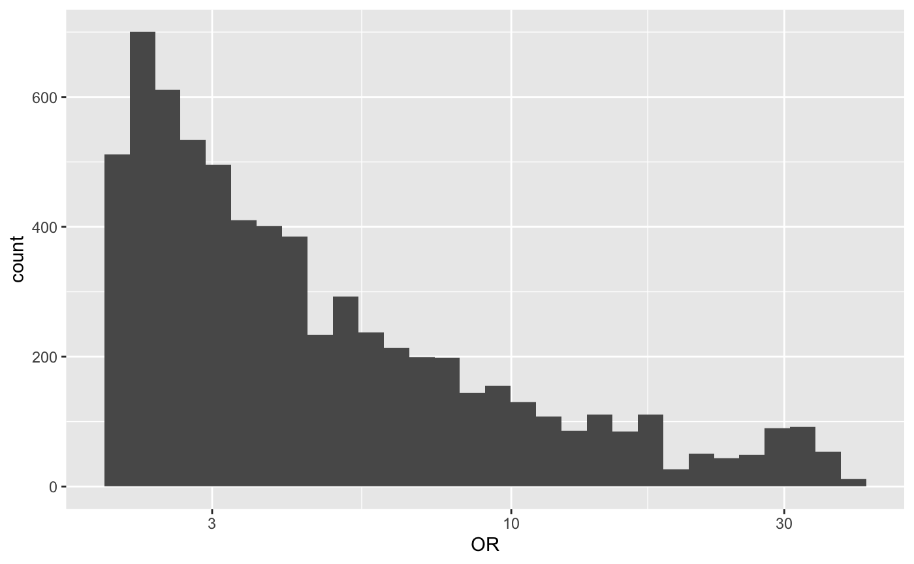
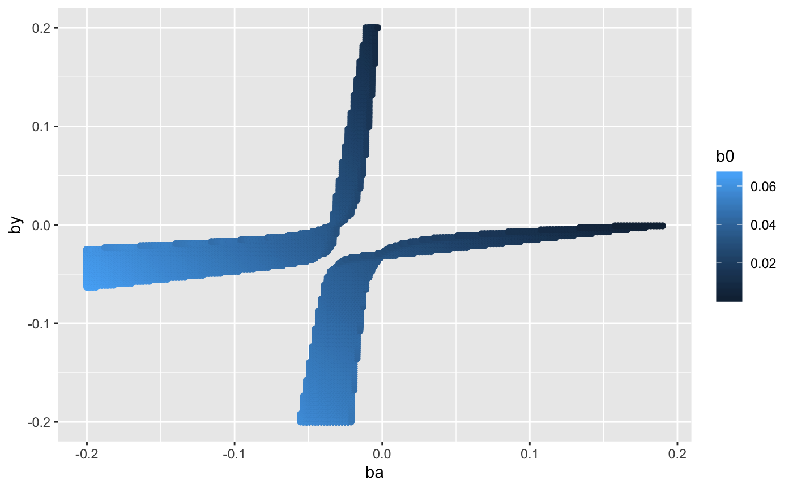

binary_collider.Rmdlibrary(collidR)Following https://osf.io/vrcuf/, can infer the biased OR for a binary exposure (\(A\)) on a binary outcome (\(Y\)) when both of the traits influence the probability of being present in the sample (\(S\))
Assume that being present in the sample is simply:
\[ P(S = 1 | A,Y) = \beta_0 + \beta_A A + \beta_Y Y + \beta_{AY} AY \]
where \(A = {0,1}\) and \(Y = {0,1}\). The expected odds ratio under this scenario is then:
\[ E[\hat{OR}_{S=1}] = \frac{\beta_0(\beta_0 + \beta_A + \beta_Y + \beta_{AY})}{(\beta_0 + \beta_A)(\beta_0 + \beta_Y)} \]
Suppose that we know the fraction of the population that is present in our sample (\(p_{S}\)). We are only interested in the \(\beta_*\) parameter values that give rise to a value of \(p_{S}\) that is within the bounds of expectation:
\[ p_{S} = \beta_0 + \beta_A p_A + \beta_Y p_Y + \beta_{AY} p_{AY} \]
Scenario: we find an association between \(A\) and \(Y\) in our ascertained sample. Our question is what effects must \(A\) and \(Y\) have on sample ascertainment in order to induce the observed odds ratio \(OR\), assuming that the true odds ratio is 1.
Initialise a new BinaryCollider class
x <- BinaryCollider$new()
x
#> <BinaryCollider>
#> Public:
#> clone: function (deep = FALSE)
#> histogram: function (bins = 30)
#> or_calc: function (b0, ba, by, bay)
#> param: NULL
#> parameter_space: function (target_or, pS, pA, pY, pAY, b0_range, ba_range, by_range,
#> ps_calc: function (b0, ba, by, bay, pA, pY, pAY)
#> scatter3d: function (ticktype = "detailed", theta = 130, phi = 0, bty = "g",Example of how to calculate the odds ratio for given \(\beta_*\) parameters:
Search over a parameter space of possible values to identify whether some target odds ratio could be explained by sample ascertainment
x$parameter_space(
target_or=2,
pS=0.0275,
pA=0.15,
pY=0.1,
pAY=0,
b0_range=c(0,1),
ba_range=c(-0.2,0.2),
by_range=c(-0.2,0.2),
bay_range=c(0,0),
granularity=100
)The parameter values that meet the target OR due to collider bias
x$param
#> # A tibble: 389 x 9
#> pA pY pAY b0 ba by bay ps1 or
#> <dbl> <dbl> <dbl> <dbl> <dbl> <dbl> <dbl> <dbl> <dbl>
#> 1 0.15 0.1 0 0.0505 -0.0343 -0.2 0 0.0254 3.84
#> 2 0.15 0.1 0 0.0505 -0.0303 -0.2 0 0.0260 3.01
#> 3 0.15 0.1 0 0.0505 -0.0263 -0.2 0 0.0266 2.45
#> 4 0.15 0.1 0 0.0505 -0.0222 -0.2 0 0.0272 2.05
#> 5 0.15 0.1 0 0.0505 -0.0384 -0.196 0 0.0252 5.27
#> 6 0.15 0.1 0 0.0505 -0.0343 -0.196 0 0.0258 3.86
#> 7 0.15 0.1 0 0.0505 -0.0303 -0.196 0 0.0264 3.02
#> 8 0.15 0.1 0 0.0505 -0.0263 -0.196 0 0.0270 2.46
#> 9 0.15 0.1 0 0.0505 -0.0222 -0.196 0 0.0276 2.06
#> 10 0.15 0.1 0 0.0505 -0.0384 -0.192 0 0.0256 5.30
#> # … with 379 more rowsVisualise the distribution of odds ratios found across the range of parameters

Visualise the \(\beta_*\) parameter ranges that meet the target odds ratio

Can try to do this in 3D also:
plot3Drgl::plotrgl()